2. Method of Characteristics¶
The method of characteristics (MOC) is a widely used technique for solving partial differential equations, including the Boltzmann form of the neutron transport equation [1]. MOC is used to solve the transport equation in 2D by discretizing both polar and azimuthal angles and integrating the multi-group characteristic form of the equation for a particular azimuthal and polar angle quadrature. The following sections detail the derivation of the characteristic form of the 2D neutron transport equation solved in the OpenMOC method of characteristics scheme [2].
Section 2.1 introduces the Boltzmann form of the neutron transport equation parametrized in 6-dimensional phase space over position, angle and energy. The following several sections introduce the various approximations made to this equation:
- characteristic transformation (Section 2.2)
- energy discretization (Section 2.3)
- discrete ordinates approximation (Section 2.4)
- isotropic scattering approximation (Section 2.5)
- flat source approximation (Section 2.6)
- constant cross-section approximation (Section 2.7)
- integrating factor solution (Section 2.8)
- track area approximation (Section 2.9)
- azimuthal planar projection (Section 2.10)
The final equations applied in OpenMOC to solve for the FSR source and scalar flux derived in the following sections are summarized below:
The source in each flat source region

Change in angular flux along a track segment
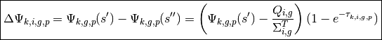
Scalar flux in each flat source region
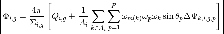
2.1. Introduction to the Boltzmann Equation¶
The Boltzmann form of the steady-state neutron transport equation is given by the following:
(1)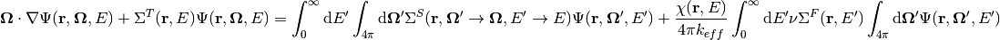
Each of the variables in use is defined in Table 1. This is a balance equation between neutrons lost to transport, lost to absorption, produced or lost from scattering and those produced from fission. It should be noted that this equation assumes isotropic emission from fission.
| Variable | Description |
|---|---|
 |
Spatial position vector |
| 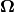 | Angular direction vector |
 |
Neutron energy |
 |
Angular neutron flux |
 |
Effective neutron multiplication factor |
 |
Neutron total cross-section |
| 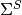 | Neutron scattering cross-section |
| 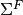 | Neutron fission cross-section |
 |
Energy spectrum for fission neutrons |
 |
Average number of neutrons emitted per fission |
Table 1: Variables in the Boltzmann equation.
The first step is to simplify this equation by defining those quantities on the right hand side as the total neutron source  :
:
(2)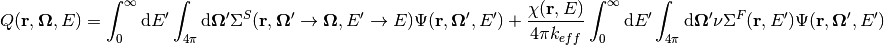
The transport equation can now be more concisely written as follows:
(3)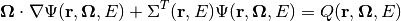
2.2. The Characteristic Transformation¶
The characteristic form of the Boltzmann equation is found by a change of variables by parametrizing with respect to some reference location 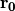:
(4)
For any location of interest, each angular direction vector  is matched to a corresponding reference location 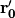 defined such that
is matched to a corresponding reference location 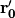 defined such that  . This parametrization for position may be substituted into the source and transport equations to obtain the following form for each:
. This parametrization for position may be substituted into the source and transport equations to obtain the following form for each:
(5)
(6)
Applying the differential operator to the angular flux in (6) leads to the characteristic form of the Boltzmann equation:
(7)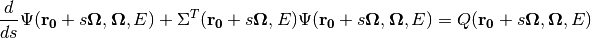
For brevity, the remainder of this section will assume the dependence of  on the reference position and and will simplify this as 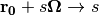 such that the characteristic equation can be written as the following:
on the reference position and and will simplify this as 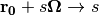 such that the characteristic equation can be written as the following:
(8)
This equation can be solved through the use of an integrating factor:
(9)
The final analytical solution to the characteristic equation is therefore:
(10)
2.3. The Multi-Group Energy Approximation¶
Equation (10) is defined with ,  and as continuous functions of energy. The first approximation to numerically solve this equation is to discretize the energy domain into distinct energy groups
and as continuous functions of energy. The first approximation to numerically solve this equation is to discretize the energy domain into distinct energy groups  where group
where group  spans the continuous range of energies from
spans the continuous range of energies from  to 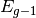. This is otherwise known as the multi-group approximation. The multi-group form of the Boltzmann equation is presented below:
to 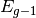. This is otherwise known as the multi-group approximation. The multi-group form of the Boltzmann equation is presented below:
(11)
The characteristic form of the equation given in (8) can also be written in multi-group form:
(12)
Likewise, the multi-group form of the neutron source (5) is given by:
(13)
It directly follows from (10) and (8) that the solution to the multi-group characteristic neutron transport equation is the following:
(14)
Where both (14) and (13) make use of the energy condensed cross-sections , , , and :
(15)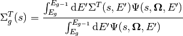
(16)
(17)
(18)
Although (18) assumes a dependence of on both the energy of the neutron causing fission  and the fission emission energy group , the former is typically summed over to simplify the multi-group to the following approximation:
and the fission emission energy group , the former is typically summed over to simplify the multi-group to the following approximation:
(19)
2.4. The Discrete Ordinates Approximation¶
The discrete ordinates approximation is introduced to approximate the integral over the angular domain in the source (13). This is equivalent to applying quadrature rules to evaluate the integral over the angular flux using a weighted sum of fluxes at specific angles where weights  are introduced for each of the quadrature points
are introduced for each of the quadrature points  .
.
(20)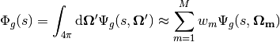
The integrated angular flux  is termed the scalar flux. Substituting this approximation to the angular flux integral into (13) leads to the following approximation to the source 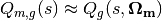 at each quadrature point
is termed the scalar flux. Substituting this approximation to the angular flux integral into (13) leads to the following approximation to the source 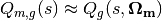 at each quadrature point  :
:
(21)
Substituting this approximation to the source into (14) one obtains the characteristic solution for the angular flux 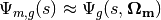 at each quadrature point :
(22)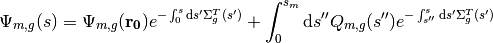
Equations (21) and (22) may be further decomposed into azimuthal and polar angle quadratures  and
and  with weights and 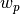 for the azimuthal plane and axial dimension, respectively:
with weights and 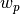 for the azimuthal plane and axial dimension, respectively:
(23)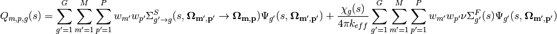
(24)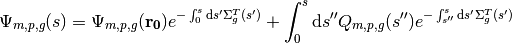
2.5. The Isotropic Scattering Approximation¶
An additional approximation that is made to simplify the evaluation of the source in (23) is to assume that the scattering source is isotropic. This approximation allows the total source to be expressed solely in terms of the scalar flux:
(25)
The subscripts  and
and  for the azimuthal and polar angles, respectively, have been dropped from 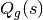 since they have been embedded in the integral over angular phase space to obtain the scalar flux .
for the azimuthal and polar angles, respectively, have been dropped from 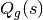 since they have been embedded in the integral over angular phase space to obtain the scalar flux .
2.6. The Flat Source Region Approximation¶
Another common approximation for MOC is to assume that the source  is constant across discrete spatial cells termed flat source regions (FSRs). This implies that the source does not vary along a characteristic
is constant across discrete spatial cells termed flat source regions (FSRs). This implies that the source does not vary along a characteristic  entering FSR
entering FSR  at
at  and exiting at 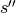:
and exiting at 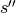:
(26)![Q_{i,g} = Q_{g}(s') = Q_{g}(s'') = Q_{g}(s) \;\;\; , \;\;\; s \in [s', s'']](../_images/math/e7c16633936b360c901591ac15d53369edf4d5cb.png)
2.7. The Constant Cross-Section Approximation¶
In addition to the flat source approximation, it is assumed that the material properties are constant across each FSR. The area-averaged cross-sections for FSR  with area
with area  are defined as:
are defined as:
(27)
(28)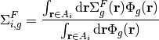
(29)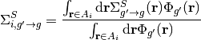
(30)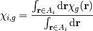
The flat source term 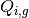 for FSR with area  is defined in terms of both fission and scattering from the area-averaged scalar flux 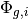 within the FSR:
is defined in terms of both fission and scattering from the area-averaged scalar flux 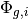 within the FSR:
(31)
(32)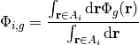
The multi-group nuclear cross-sections for each FSR are an input to OpenMOC. As a result, the area-averaging integrals must be performed by some pre-processing method such as Monte Carlo.
2.8. The Integrating Factor Solution¶
Each chracteristic may be discretized into segments across individual FSRs. This approximation allows (24) to be localized to a segment of characteristic across FSR from its entry point at to exit point at . By defining the integrating factor in terms of the optical length  one may analytically evaluate the integrals in (24) and express the outgoing flux along the characteristic as follows:
one may analytically evaluate the integrals in (24) and express the outgoing flux along the characteristic as follows:
(33)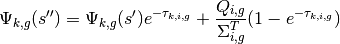
With minor algebraic rearrangement, the change in angular flux along the characteristic is given by the following:
(34)
2.9. The Track Area Approximation¶
The key quantity remaining to be determined is the integral over area for the FSR area-averaged scalar flux in (32). The track area approximation is used to compute this value numerically.
First, define  such that the average angular flux in FSR along characteristic math:k is the following integral:
such that the average angular flux in FSR along characteristic math:k is the following integral:
(35)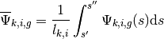
Upon evaluating the integral, the average angular flux along the characteristic can be reduced to the following algebraic expression:
(36)![\overline{\Psi}_{k,i,g} = \frac{1}{l_{k,i}}\left[\frac{\Psi_{k,g}(s')}{\Sigma_{i,g}^T}(1 - e^{-\tau_{k,i,g}}) + \frac{l_{k,i}Q_{i,g}}{\Sigma_{i,g}^T}\left(1 - \frac{(1 - e^{-\tau_{k,i,g}})}{\tau_{k,i,g}}\right)\right]](../_images/math/4121760c3e36b618891b060f727dfe9b9aaa1661.png)
Assuming a constant source and cross-sections in FSR , the value given for the average angular flux in (36) is exact. In order to exactly compute the area-averaged scalar flux, the average angular flux from every characteristic crossing FSR must be taken into account. This is numerically intractable; hence, an appropriate subset  of characteristics, henceforth known as tracks, is chosen and the integral over the area of the FSR is performed using quadrature rules with a weight
of characteristics, henceforth known as tracks, is chosen and the integral over the area of the FSR is performed using quadrature rules with a weight  for each track 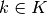 crossing through the FSR
for each track 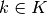 crossing through the FSR  . The contribution 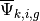 of track with azimuthal and polar quadrature weights denoted by 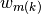 and
. The contribution 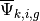 of track with azimuthal and polar quadrature weights denoted by 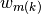 and  , respectively, is then integrated to find the area-averaged scalar flux in FSR as follows:
, respectively, is then integrated to find the area-averaged scalar flux in FSR as follows:
(37)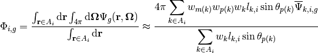
In (37), the angle  formed by characteristic with respect to the polar axis is introduced to project the length of the characteristic segment 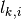 onto the azimuthal plane. In this application of quadrature to approximate an area integral, the weights can be thought of as the effective width of each track .
formed by characteristic with respect to the polar axis is introduced to project the length of the characteristic segment 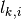 onto the azimuthal plane. In this application of quadrature to approximate an area integral, the weights can be thought of as the effective width of each track .
The denominator in (37) then simplifies to the area :
(38)
The scalar flux can be found in terms of average angular fluxes from each track by substituting the expression for the average angular flux from (36) into (38) and rearranging:
(39)![\Phi_{i,g} = \frac{4\pi}{\Sigma_{i,g}}\left[Q_{i,g} + \frac{1}{A_i}\displaystyle\sum\limits_{k\in A_{i}}\omega_{m(k)}\omega_{p(k)}\omega_{k}\sin\theta_{p(k)}\left(\Psi_{k,i,g}(s') - \frac{Q_{i,g}}{\Sigma_{i,g}^T}\right)(1 - e^{-\tau_{k,i,g}})\right]](../_images/math/37c80839c3713466de953769d429f325bb92a8f0.png)
The final form for the scalar flux can be simplified in terms of the change in angular flux 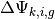 along each track segment as defined in (34):
(40)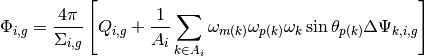
2.10. Projection from the Azimuthal Plane¶
The preceding sections used track segment lengths in 3D. In practice, the memory footprint for storing track segment data is greatly reduced if the polar angle quadrature is replicated for each azimuthal quadrature point. Such a quadrature allows for track segments to be stored in the 2D azimuthal plane and projected into 3D for each polar angle when necessary. The projection results in some minor changes to the equations presented in the previous sections.
In what follows, each track segment length will be assumed to reside within the azimuthal plane. Likewise, the optical length  also resides in the azimuthal plane. For notational simplicity, the 3D projection of the track segment length for polar angle will be denoted by
also resides in the azimuthal plane. For notational simplicity, the 3D projection of the track segment length for polar angle will be denoted by  and the optical length by 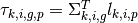.
and the optical length by 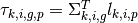.
First, the polar angle must be accounted for in the expression for the track segment average angular flux to project the segment length into the polar dimension:
(41)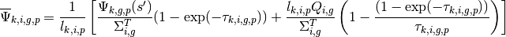
Next,  is dropped and a summation over polar angles is incorporated into the area-averaged scalar flux in (38):
is dropped and a summation over polar angles is incorporated into the area-averaged scalar flux in (38):
(42)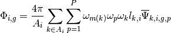
The scalar flux can be found in terms of average angular fluxes from each track by substituting the expression for the average angular flux from (41) into (42) and rearranging:
(43)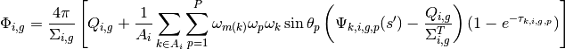
The final form for the scalar flux can be simplified in terms of the change in angular flux 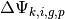 along each track segment as defined in (40):
(44)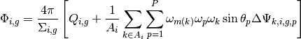
This is the form of the transport equation solved by the MOC formulation used in OpenMOC.
2.11. References¶
| [1] |
|
| [2] |
|

Table Of Contents
- 2. Method of Characteristics
- 2.1. Introduction to the Boltzmann Equation
- 2.2. The Characteristic Transformation
- 2.3. The Multi-Group Energy Approximation
- 2.4. The Discrete Ordinates Approximation
- 2.5. The Isotropic Scattering Approximation
- 2.6. The Flat Source Region Approximation
- 2.7. The Constant Cross-Section Approximation
- 2.8. The Integrating Factor Solution
- 2.9. The Track Area Approximation
- 2.10. Projection from the Azimuthal Plane
- 2.11. References